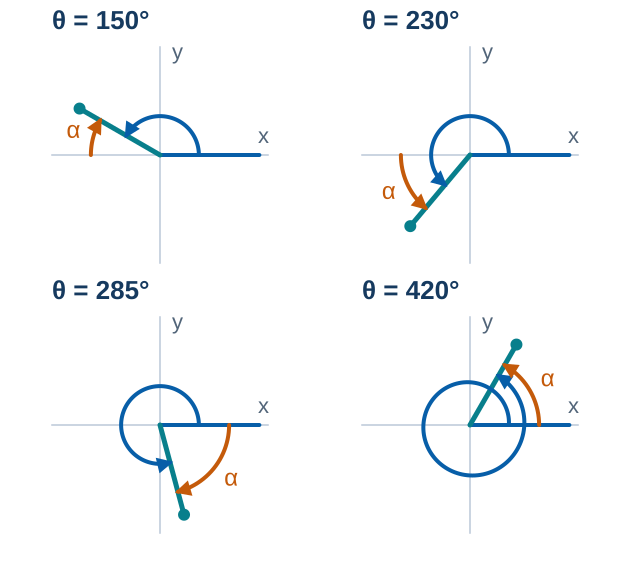
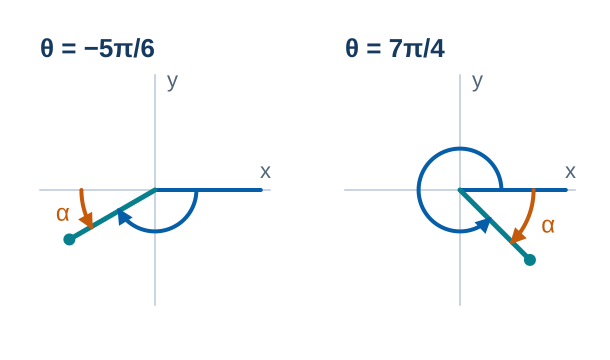
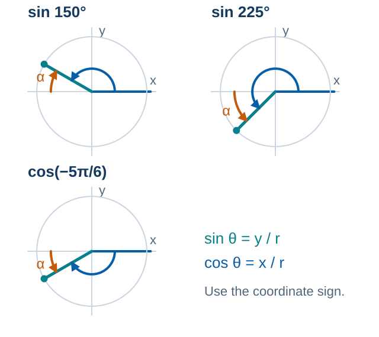
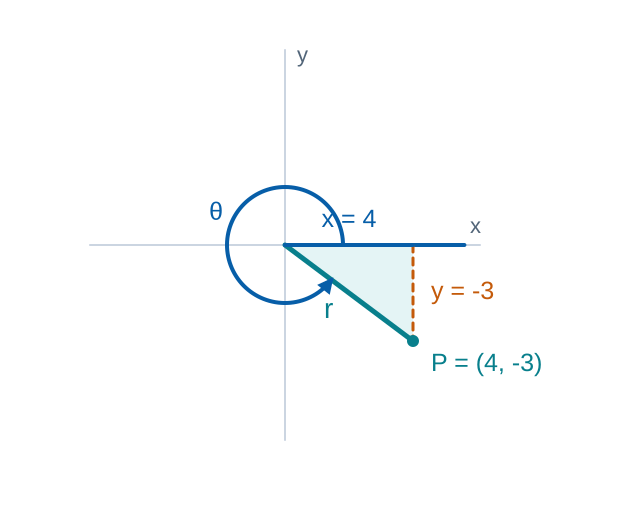

MATH 130 · Unit 3B
Reference Angles and Trig Equations
Friday, November 13, 2026. Sketch, predict, explain, and check.
50 minutes · Offline capable
Reference angles and signs
Predict firstFor $\theta=225^\circ$, sketch the terminal side. Predict the quadrant, reference angle, and signs of sine and cosine.
Commit to a response before discussion.
Feedback and solutionQIII; $\alpha=45^\circ$; sine and cosine are both negative.
Activate · 2 minSource: Authored
Rotate, predict, then reveal
Choose an angle. Predict its reference angle and signs, then test your reasoning.
Predict the quadrant, reference angle, and signs before revealing.
Practice · 4 minSource: Authored
Reference angles in degrees
Find the reference angles for $150^\circ$, $230^\circ$, $285^\circ$, and $420^\circ$.
- $150^\circ$: QII, $180^\circ-150^\circ=30^\circ$.
- $230^\circ$: QIII, $230^\circ-180^\circ=50^\circ$.
- $285^\circ$: QIV, $360^\circ-285^\circ=75^\circ$.
- $420^\circ$ is coterminal with $60^\circ$: QI, reference angle $60^\circ$.

Name the quadrant before calculating α.Model · 4 minSource: Authored
Pacing checkpointReference angles in radians
Student practiceFind the quadrant and reference angle for $-5\pi/6$ and $7\pi/4$.
Feedback and solution- $-5\pi/6+2\pi=7\pi/6$: QIII, $\alpha=\pi/6$.
- $7\pi/4$: QIV, $\alpha=2\pi-7\pi/4=\pi/4$.

Follow the rotation, then measure the acute angle to the x-axis.Practice · 4 minSource: Authored
Magnitude first, then sign
Evaluate $\sin150^\circ$, $\sin225^\circ$, and $\cos(-5\pi/6)$ exactly.
- $\sin150^\circ=\sin30^\circ=1/2$ (QII).
- $\sin225^\circ=-\sin45^\circ=-\sqrt2/2$ (QIII).
- $\cos(-5\pi/6)=-\cos(\pi/6)=-\sqrt3/2$ (QIII).

The sign comes from the coordinate; the magnitude comes from the reference angle.Model · 4 minSource: Authored
Six functions from a terminal point
Student practiceFor $P=(4,-3)$, find $r$ and all six trig functions.
Feedback and solution- $r=5$; $\sin\theta=-3/5$, $\cos\theta=4/5$, $\tan\theta=-3/4$.
- $\csc\theta=-5/3$, $\sec\theta=5/4$, $\cot\theta=-4/3$.
- The QIV coordinates give $\tan\theta=y/x=(-3)/4$.

Signed coordinates: x = 4 and y = −3. Radius r remains positive.Practice · 4 minSource: Authored
Angles on the coordinate axes
- At $90^\circ$, $x=0$: $\sin\theta=1$, $\cos\theta=0$, and $\tan\theta$ is undefined.
- At $180^\circ$, $y=0$: $\sin\theta=0$, $\cos\theta=-1$, and $\cot\theta$ is undefined.
These angles have no acute reference angle. Check the denominator directly.
Explain · 2 minSource: Authored
Calculator output and interval solutions
Find all solutions of $\sin\theta=-0.848$ with $0^\circ\leq\theta<360^\circ$. Round to two decimals.
- $\arcsin(-0.848)\approx-57.99^\circ$ points to QIV, but lies outside the interval.
- Use the unrounded $\alpha\approx57.994800^\circ$. Sine is negative in QIII and QIV.
- $\theta=180^\circ+\alpha\approx237.99^\circ$.
- $\theta=360^\circ-\alpha\approx302.01^\circ$. Check both points on the circle.
 A negative principal output and a positive coterminal angle share a terminal side.
A negative principal output and a positive coterminal angle share a terminal side.Model · 6 minSource: Authored
Pacing checkpointAll solutions, including no solution
Student practice- Find all solutions on $0^\circ\leq\theta<360^\circ$, rounded to two decimals.
- A: $\tan\theta=-1.830$; B: $\cos\theta=0.4003$; both: $\sin\theta=-1.637$.
Feedback and solution- (a) $\theta\approx118.65^\circ,\ 298.65^\circ$ (QII and QIV).
- (b) $\theta\approx66.40^\circ,\ 293.60^\circ$ (QI and QIV).
- (c) No real solution: a sine value must lie in $[-1,1]$.
Practice · 6 minSource: Authored
Can an equation have no angles?
Error analysis- A student writes two angles for $\sin\theta=-1.637$.
- Name a check that would catch the error before using a calculator.
Feedback and solutionNo real angle has that sine value. A calculator domain error is expected.
Feedback · 2 minSource: Authored
Exit check
- Individually: find all solutions of $\cos\theta=-0.75$ on $0^\circ\leq\theta<360^\circ$.
- Sketch both terminal sides and explain why a principal output alone can miss a solution.
Exit responseAnswer in complete mathematical sentences and identify one remaining question.
Feedback and solution- $\theta\approx138.59^\circ,\ 221.41^\circ$.
- Every final angle must satisfy both the equation and the stated interval.
Synthesize · 3 minSource: Authored